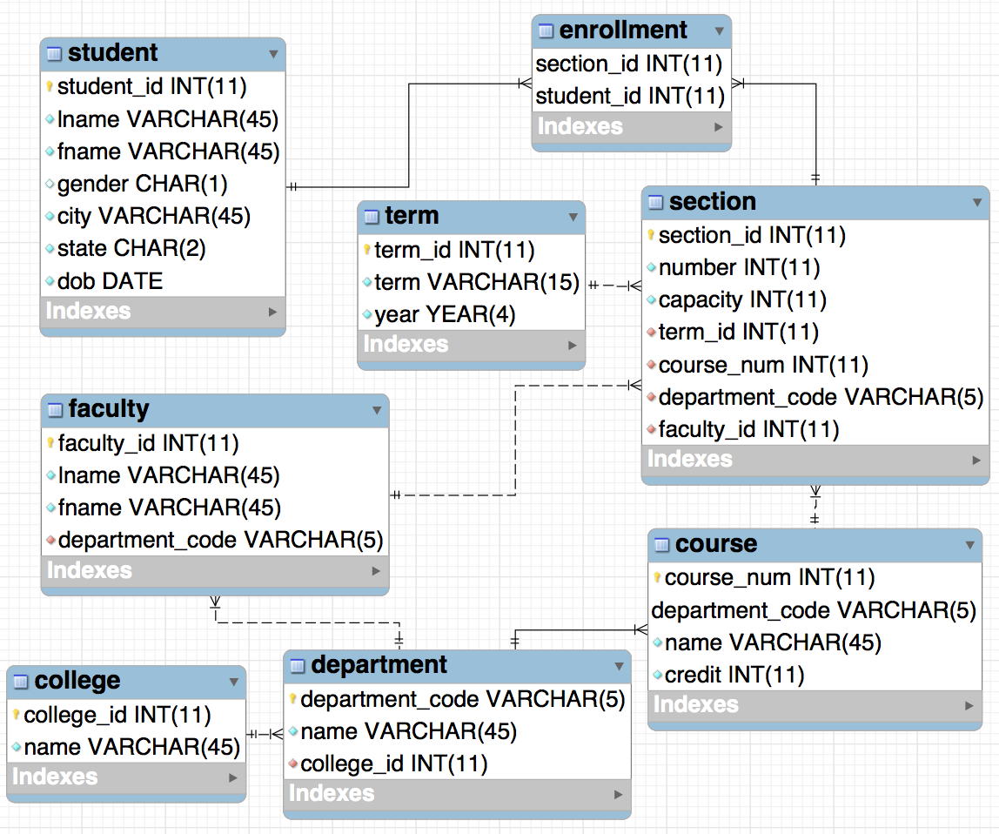

Note: The weekly Teaching Notes only identify week-specific
considerations. Please refer to the General Teaching Notes for
repeating course facilitation expectations.
Week 11 Outcomes
- Review concepts including: database design, ERD creation, and Insert commands
During the Week
First of the week
(W11 - Additional Topics Material)
- Instead of a preparation check this week you can briefly demonstrate the additional topics by showing them
a few subqueries, how to create an index and how to create a view.
- Here are some examples you could use:
- SQL CODE FOR PRACTICE
- They won't use any of these "additional topics" in the project this week or next but you can consider
letting them add one of the new topics to their project for extra credit if you'd like.
Mid-week
- There will be no quiz this week. This gives them more time to work on their project.
- Give them lots of class time this week to complete their projects
End of the Week
The homework due Saturday will be
- Creating an ERD and use forward engineering code to place above insert commands to populate the database. They will turn in an sql file with the forward engineering code and inserts.
Grading/Feedback
- Instructor: The homework will be instructor or TA graded and will be checking their ERD that
they have the database designed properly by reverse engineering after running their SQL file with all their forward engineering code and insert commands. Also check to make sure all the data was inserted correctly.
- Here is the ERD:

- Here is the key:
- SQL CODE KEY FOR PROJECT PART 1
Looking Ahead
- Remind students that they must have the first part of this project done correctly in order to get the second
half of the project done properly next week. They need to double check everything and get feedback before going
onto project part 2 next week.